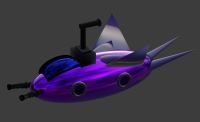
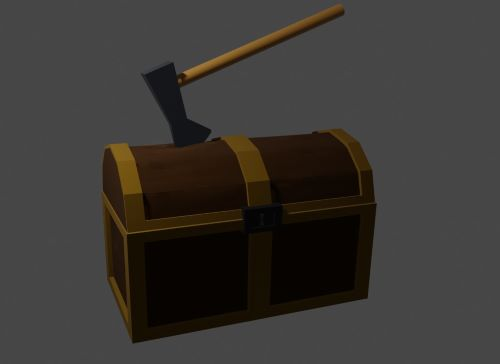
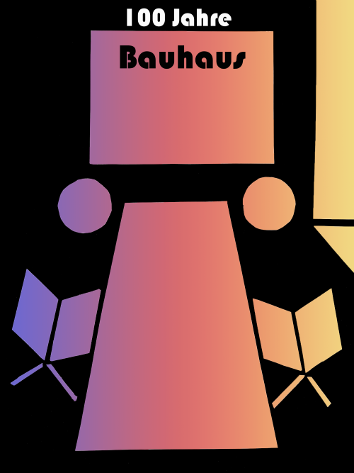

Meine erste Abgabe in Computergrafik & 3D-Modellierung: Ein U-Boot.

Meine zweite Abgabe: Eine Schatztruhe mit einer Axt darin.

Derzeit arbeite ich noch an meiner dritten Abgabe in Computergrafik & 3D-Modellierung.
Die Taschenmacher GmbH bietet einen Online Versand an, in dem man Maultaschen selber zusammen stellen kann. Es gibt viele verschiedene Sorten wie Schokolade, Spinat, Rind uvm.
Hier habe ich mithilfe des positiv-negativ Verfahrens etwas zu dem 100 jährigen Jubiläum von Bauhaus erstellt.
